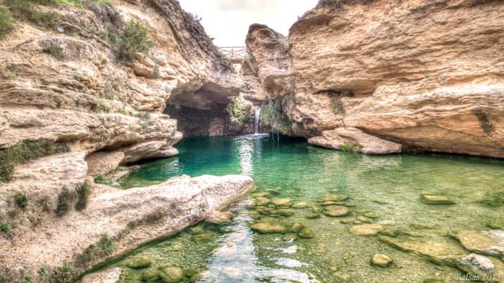
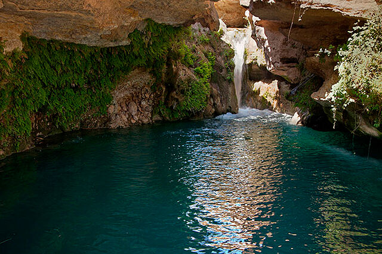
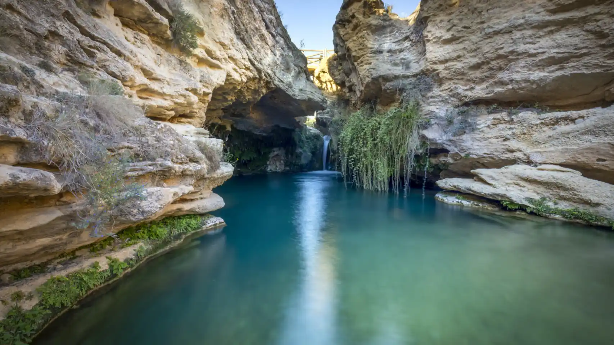
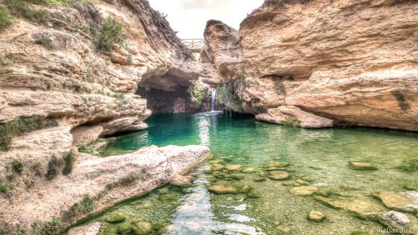
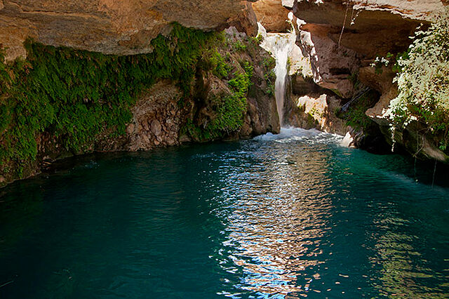
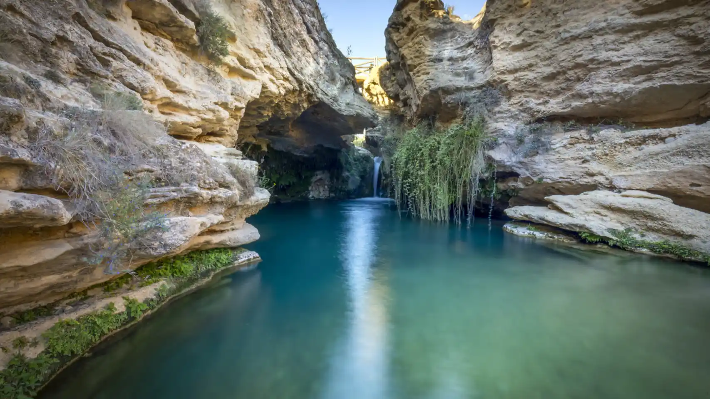

Turismo de Bullas - Verano
+34 688 66 66 66
turismoBullas@info.com
+34 688 66 66 66
turismoBullas@info.com
 





INFORMACION
El Salto del Usero está considerado como uno de los espacios naturales de mayor
belleza de la Región de Murcia con gran interés hidrológico, geomorfológico y
sedimentológico en el que pueden observarse procesos erosivos generados en una
formación de areniscas y travertinos de notable valor.
Situado en el municipio de Bullas y localizado en la ladera noroeste del cerro del
Castellar por donde pasan las aguas del río Mula, en un paraje llamado El Molinar es
visitado por miles de turistas durante todo el año
HISTORIA
Destacando la celebración en la noche de San Juan de la tradicional «Bajada de la Mora», que congrega a cientos de personas al filo de la media noche reunidos en torno a la vaera, con el objetivo de encontrarse con la «reina mora» y poder ser bendecidos por sus milagrosas aguas.
RECOMENDACIONES
No recoger travertinos y respetar la gea, flora y fauna.
Extremar las precauciones al pasear por la zona por el riesgo de caídas.
No tirar desperdicios en la zona.